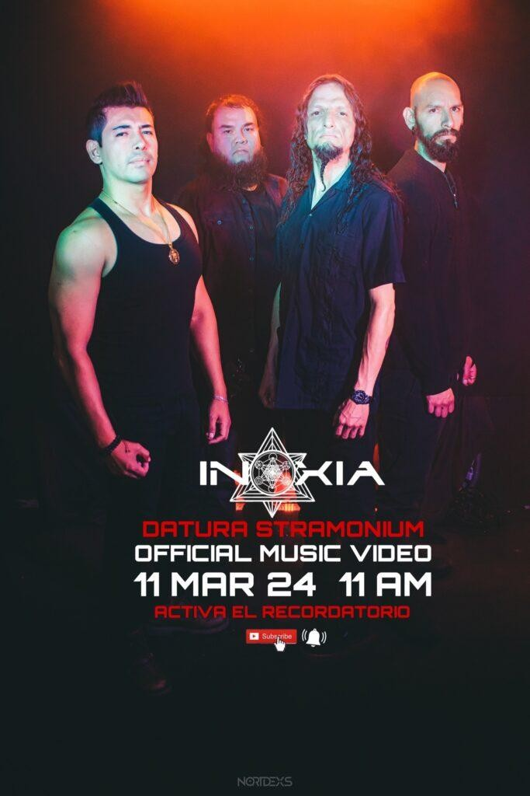
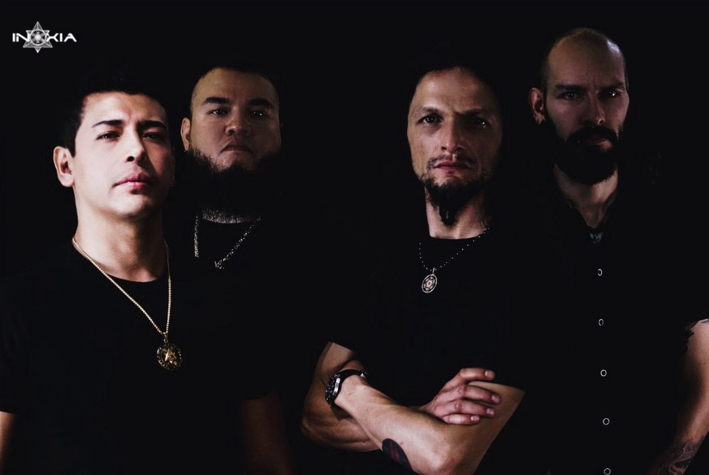

A través de sus canales oficiales, la banda de metal alternativo Inoxia ha encendido las alarmas con el anuncio del próximo estreno de su video más reciente: “D A T U R A S T R A M O N I U M”.

BITÁCORA VISUAL: LA TOXICIDAD HECHA RUIDO
Este nuevo corte promete sumergirnos en la atmósfera densa y visceral que caracteriza al proyecto, explorando sonidos que desafían el metal convencional.

INOXIA: METAL ALTERNATIVO DESDE LAS SOMBRAS
La cita es este 11 de marzo a través de su canal oficial de YouTube. Prepárense para una experiencia sensorial que no dejará a nadie indiferente.
VER EN YOUTUBE